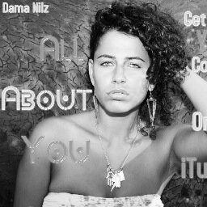

SPKRBOX: Workshop with Dama Nilz (TRONDHEIM) - VENTELISTE
- Kategori:
- Tverrfaglige kurs
Tverrfaglige kurs
Åpent for profesjonelle skuespillere og andre profesjonelle deltakere med spesifisert bakgrunn og erfaring. Se søknadsteksten for spesifikasjoner. Legg ved CV. - Dato:
- 23.02.2014 til 23.02.2014
- Start kl :
- 12:00
- Slutt kl :
- 15:00
- Pris:
- 200,-
- Adresse:
- Verkstedhallen på Svartlamoen, Strandveien 29, Trondheim
 SPKRBOX er Norges aller første hiphopteaterfestival, kuratert av skuespiller Cici Henriksen. Festivalen går av stabelen både i Trondheim og Oslo, og Norsk Skuespillersenter er med som samarbeidspartner og arrangerer kurs i begge byer. Kurset foregår på engelsk.
{kind=link}
Om workshopen
- An Ass-kicking music-making machine
Kan du litt, ingenting eller en god del om RAP ? Da er dette kurset for deg! Dama Nilz vil lære deg kunsten å lage Rhythm And Poetry (RAP) og i tillegg gi deg en innføring i hiphopens historie med fokus på kvinnelige pioneerer, som Mc Lyte, Queen Latifah, Salt-n-Pepa and Roxanne Shante. Hun vil ta for seg beatmaking og låtskriving, og man vil jobbe sammen i grupper frem mot et sluttresultat. Workshopen vil bli filmet, og man får tilsendt sitt eget material etter workshopen. (Dette er kun til privat bruk, ingenting vil bli lag ut på YouTube eller lignende kanaler.)
Tre ut av din komfortsone og gjør det du egentlig ikke tør!
Om Dama Nilz
Rapartisten Dama Nilz er født og oppvokst I Brooklyn, New York. Hun produserer sine egne låter, og har vunnet flere rapkonkurranser som f.eks EOW MC og opptrådt på bl.a. Jimmy Fallon show.
For hvem?
Kurset er tverrfaglig og åpent for skuespillere, rappere/hip-hop-artister og andre utøvende kunstnere som er nysgjerrige på møtepunktet mellom scenekunst og hip-hop. Studenter er også velkommen. Workshopen holdes på engelsk.
Pris
Ordinær pris: 200,-
Pris for medlemmer av Norsk Skuespillerforbund: 150,-
Det arrangeres også kurs med Darian Dauchan under SPRKBOX i Trondheim. Dersom du melder deg på begge kursene får du kurs nummer to for kun 100,-!
Alle som melder seg på ett eller flere av kursene får GRATIS FESTIVALPASS med på kjøpet!

Om SPKRBOX
Trondheim; 21. - 23. februar
Oslo; 28. februar - 2. mars
SPKRBOX er Norges første hiphopteaterfestival, en møteplass for hiphophoder, teaternerder og folk som vil oppleve et annerledes teater. SPKRBOX en kreativ kollisjon med lav terskel, høyt nivå og laidback stemning.
HVEM skriver og fremfører HVA for HVILKET publikum? SPKRBOX vil utfordre det etablerte teateret i Norge og invitere til en hiphopfest med teater som utgangspunkt. Hovedprogrammet vil i stor grad bestå av utenlandske forestillinger, med håp om at det vil gi en forståelse for hva hiphopteater kan være og samtidig inspirere til samarbeid på tvers av fagfelt slik at man sammen kan videreutvikle denne sjangeren i norsk sammenheng.
Blant samarbeidspartnere til SPKRBOX er Nationaltheatret, Dramatikkens hus, Cafeteatret / Nordic Black Theatre, Verkstedshallen på Svartlamoen og Norsk Skuespillersenter.
Men hva er hiphopteater?
«Any production that captures the energy and feeling and drive of the hip-hop generation, its issues and concerns, its lager cultural aesthetic, is hip-hop theater. And hip-hop theater is more than just what is on stage; it`s who`s in the audience as well. A theater work can have all the «beats and rhymes and slick moves it wants, but if the production excludes the hip-hop community from the audience, it loses a valuable synergy. The interaction between the performer and the audience is a crucial element of the work.»
- Holly Bass, kurator for «Hip Hop Theater Festival» i USA